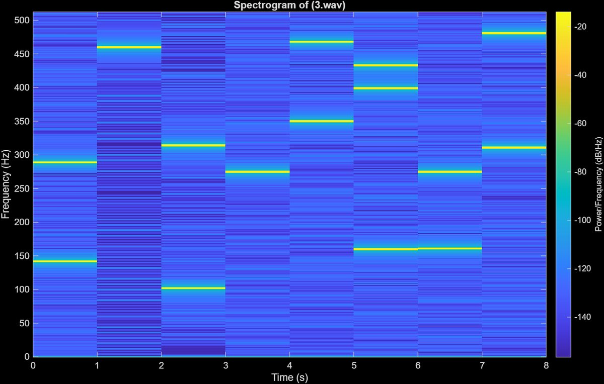
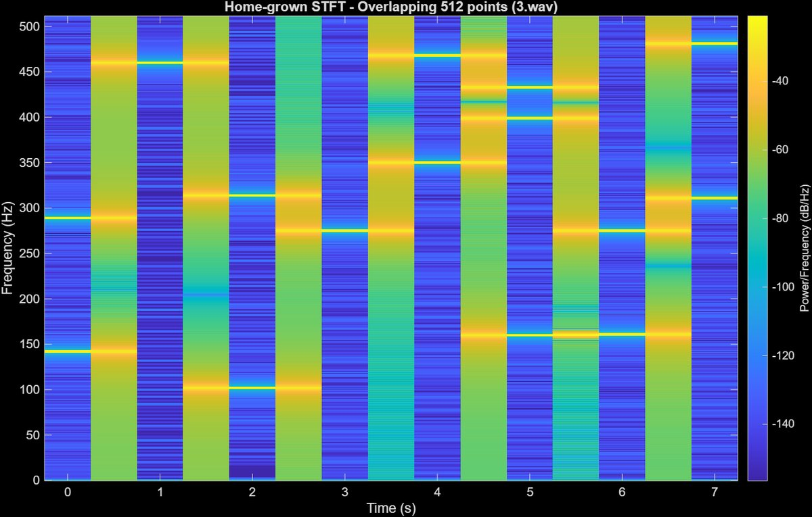
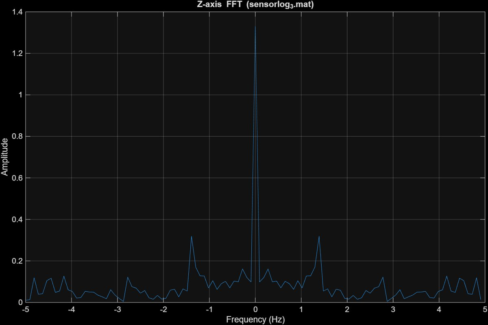
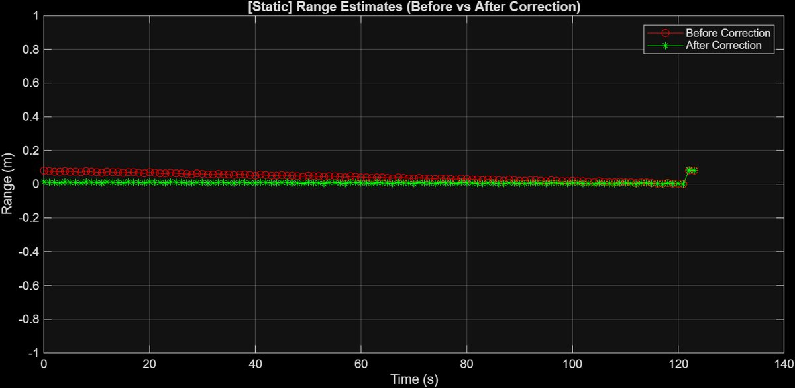
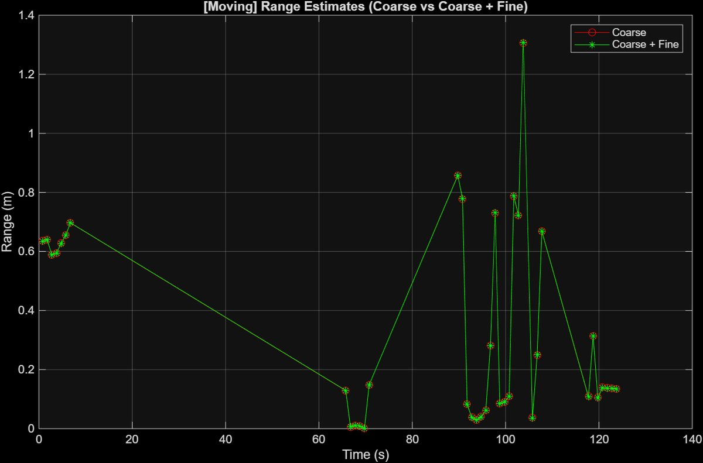

Signal Processing · Sensing · TinyML · ELEC 537 (Coursework, Fall 2025)
Intelligent Mobile Systems
Getting useful information out of phone and embedded sensors: a hand-built STFT, step detection, acoustic ranging with clock drift correction, and YOLO optimization on a Raspberry Pi.
Rice ELEC 537 covered signal processing for sensing, localization, and on-device machine learning. This page covers the three graded assignments, all of which I wrote up with code and plots in this repository. The course final project was an assistive robot for low-visibility conditions, which has its own entry in the project list.
Assignment 1: STFT from Scratch and Step Detection
A spectrogram built without the library function
A short-time Fourier transform (STFT) cuts a signal into frames and takes the spectrum of each one, so you can see which frequencies are present at which moment. I first plotted the built-in MATLAB spectrogram of a recording that steps through tones, using a 1024-point FFT and a Hamming window, then rebuilt the same result by hand.

Reference spectrogram: each horizontal line is a tone, and it changes every second.
Step 1. Make the DFT a matrix
The DFT of a frame is just a matrix times a vector. I generated the 1024 x 1024 matrix with exp(-1j*2*pi*n'*m/N). Plotted, its real part is a cosine pattern and its imaginary part is a sine pattern, the same shape shifted in phase. For a real signal the spectrum's second half is the complex conjugate of its first half, which is why only the positive half of the frequencies carries new information.
Step 2. Window each frame, multiply, stack the columns
Each 1024-sample frame is multiplied by a Hamming window to reduce spectral leakage, then by the DFT matrix. The columns become the spectrogram. Tones came out near 50, 100, 150, 250, 300, and 450 Hz, but with non-overlapping frames they look broken between steps.
Step 3. Do the whole STFT in one matrix multiplication
The challenge was to avoid loops and reshaping. For non-overlapping frames I built a block-diagonal DFT matrix with kron(eye(numFrames), dft_matrix) and a block-diagonal window matrix, so a single product gives every frame. For 50% overlap the frames share samples, so I added a sparse selection matrix that extracts the overlapping frames from the raw signal first.

My STFT with 512-sample overlap, computed with one big matrix multiplication.
The overlapping version shows the same tones but smoother, because tonal events are less likely to fall between frames. The price is more FFTs: with 50% overlap the number of frames roughly doubles.
Time of arrival from an accelerometer
Given a phone accelerometer log of a walk (10 Hz sampling), the task was to estimate how long it would take to walk 480 m between two campus buildings. The Y axis sat around 9 to 12 m/s², which is gravity, so Y was not useful for steps. The Z axis showed the repeating pattern of walking, so I took its FFT and read off the dominant peak.

Worked through: step frequency 1.39 Hz × an assumed stride of 0.5 m = 0.69 m/s walking speed. Then 480 m ÷ 0.69 m/s ≈ 691 s, about 11.5 minutes.
The stride length is an assumption, not a measurement, and the answer scales directly with it. Using a calibrated stride for each person is the obvious improvement.
Assignment 2: Acoustic Ranging with Clock Drift Correction
A laptop speaker played a repeating preamble once per second, and my phone recorded it. Sound travels at about 343 m/s, so if I know exactly when each preamble arrived relative to when it was sent, the range follows. I recorded two cases: a static phone next to the speaker, and a phone moved slowly toward it. The hard part is that the two devices have separate clocks, so I solved the problem in three layers.
1. Find each preamble by cross-correlation
I slid the known template along the recording using conv with the template flipped (because convolution flips it, and correlation should not). The peaks mark preamble positions, and a threshold plus a minimum spacing in findpeaks rejected false detections. This is accurate to about one sample.
2. Measure and remove clock drift
The true transmit interval was not given, so I estimated it from the static recording as 1.000007 s. A linear fit (polyfit) of detected arrival time against preamble number gave a slope of 1.00000511. Dividing by the transmit interval gives a drift ratio of 0.99999833, so the receiver clock runs about 1.67 ppm slow. That is tiny, but over a two-minute recording it accumulates into a visible range error, as the plot shows.
3. Refine below one sample with FFT phase
A delay smaller than one sample appears as a phase slope across frequency. For each detected preamble I took the FFT (Hann window), computed the phase of the recorded spectrum divided by the reference spectrum, kept only the strong frequency bins, and fitted a line. The slope is the sub-sample delay. The final delay is the coarse estimate plus this fine correction, and I resampled from 16 kHz to 48 kHz first.

Static phone. Before correction (red) the range estimate drifts across the recording. After correction (green) it stays flat, as it should for a phone that does not move.

Moving phone, coarse versus coarse plus fine.
Honest limits: the moving result is noisy. Not every preamble was detected while the phone moved, and I reused the drift measured in the static run, but the moving setup has its own drift and frequent movement of the phone. The combined coarse and fine estimate was smoother and more consistent than coarse alone, but I would not call the moving ranges accurate. A subtle detail I had to get right: phase unwrapping helped the fine estimate for the moving case but added spurious whole cycles to the delay in the combined stage, because the coarse step already fixes the whole-cycle ambiguity.
Assignment 3: Optimizing YOLO11n on a Raspberry Pi
With a classmate (Steven Chen), I ran the smallest YOLO11 model, YOLO11n, on a Raspberry Pi with its camera, then tried to make it smaller and faster. First a real-time demo: 1280 x 720 camera frames were resized to 576 x 640 for the model, and one sample frame took about 485 ms to process.
For the experiments we photographed 24 images of three objects (keyboard, mouse, laptop, 8 each) and measured model file size, average inference time on the Pi, and accuracy as correct detections over 24 images.
Quantization
| Model | Size | Avg inference | Accuracy |
|---|---|---|---|
| PyTorch baseline | 5.35 MB | 242.5 ms | 95.83% |
| TFLite FP32 | 10.25 MB | 285.4 ms | 95.83% |
| TFLite FP16 | 5.18 MB | 284.1 ms | 95.83% |
| TFLite INT8 | 2.89 MB | 247.1 ms | 95.83% |
Accuracy was identical (23 of 24; the one miss was a mouse). INT8 was the best trade-off: about 46% smaller than the baseline file at nearly the same speed. FP16 halved the size relative to FP32 but gave no real speedup, which suggests the Pi CPU gains little from half-precision floats.
Pruning
We zeroed the lowest-magnitude weights (L1 pruning) in different layers and measured the damage.
| Pruned layers | Sparsity | Avg inference | Accuracy |
|---|---|---|---|
| All Conv2d | 10% | 262.0 ms | 95.83% |
| cv1.conv only | 50% | 264.0 ms | 75.00% |
| All Conv2d | 30% | 262.7 ms | 0% |
| cv1.conv only | 30% | 260.7 ms | 0% |
What I take from it: pruning did not help at all. File size stayed at 5.35 MB and inference got slower (about 260 ms versus 242 ms), because this kind of unstructured pruning only sets weights to zero. The tensors keep their shape, so nothing gets smaller or faster without sparse-aware hardware or structured pruning. Accuracy also fell off a cliff: at 30% the models detected nothing and once labeled a mouse as a knife. The non-monotonic result (30% on cv1.conv gave 0%, but 50% gave 75%) was not investigated, so I would not draw conclusions about which layers tolerate pruning. The test set is also small, only 24 images, so these numbers show direction rather than precision.
Paper Presentation: The Battery-Free Game Boy
For the course paper review I presented ENGAGE, a Game Boy that runs on solar power and the energy of button presses instead of a battery. Because power is intermittent, it saves progress with MPatch, a checkpoint scheme that stores only the memory regions that changed (small "patches") in non-volatile FRAM, so a power loss never corrupts the last good state. It is the same problem I meet in low-power wearable firmware: do useful work and keep your state safe when energy is scarce.
Where I Use It Now
The coarse-then-fine idea from Assignment 2 is what I am applying on the Houdini software-defined radio project: record time-domain samples, measure the phase difference between a short and a long cable, and convert it to a time delay as a step toward range measurement with antennas.
Techniques
STFT · DFT matrix · Hamming and Hann windows · FFT peak detection · cross-correlation · linear regression · phase-slope delay estimation · pedestrian dead reckoning · YOLO11 · TFLite quantization (FP32, FP16, INT8) · L1 pruning · Raspberry Pi · MATLAB · Python